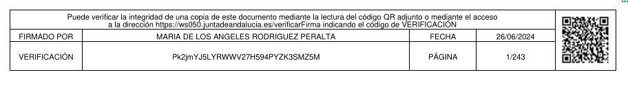
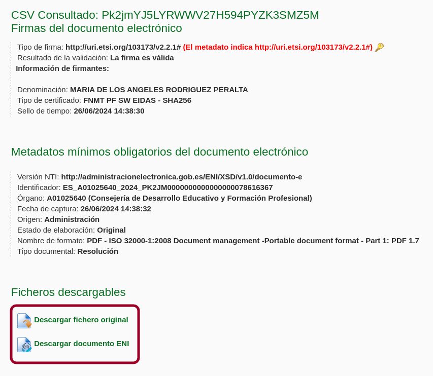

9.1.3.2. Firma de documentos¶
Una de las aplicaciones más evidentes de los certificados digitales es la firma digital de documentos en sustitución de la firma manuscrita.
9.1.3.2.1. Estatus legal¶
La validez legal de la firma digital está desarrollada en España a través de la Ley 6/2020, de 11 de noviembre, reguladora de determinados aspectos de los servicios electrónicos de confianza, y el Reglamento eIDAS (Reglamento 910/2014, conocidos por sus siglas en ingles eIDAS). La normativa establece dos tipos de prestadores de servicios de confianza (esto es, de CA):
Prestadores cualificados, que son aquellos reconocidos como tales por un organismo supervisor[1]. Las obligaciones a los que están sujetos se encuentran enumeradas en el artículo 9 de la Ley 6/2020.
Prestadores no cualificados, que son aquellos que no gozan de este reconocimiento, aunque se encuentran inscritos para el ejercicio de su actividad.
Esta distinción origina que haya certificados digitales cualificados y certificados digitales no cualificados y, consecuentemente, una firma electrónica cualificada y una firma electrónica no cualificada. La diferencia legal entre una y otra firma es que la primera tiene los mismos efectos juridicos que la firma manuscrita, mientras que la segunda no, aunque puede ser admitida en un juicio[2].
El Ministerio publica en su web la lista de prestadores cualificados y no cualificados de confianza. Como todos los países de la Unión tiene la obligación de remitir estas listas, es posible la consulta de todos los prestadores europeos.
9.1.3.2.2. La firma digital¶
La sintaxis para el objeto que representa una firma digital fue originariamente PKCS #7 (RFC 2315). Posteriormente, el formato se amplía y estandariza danto lugar al actual CMS (RFC 5652). La estructura sumplificada de un objeto CMS es la siguiente:
CMS SignedData
+---- certificates (certificados firmantes o cadenas de certificados)
+---- signerInfos (información de cada uno de los firmantes)
+-- SignerInfo (primer firmante)
| +-- signedAttrs
| | +-- contentType (el tipo del documento que se firma)
| | +-- messageDigest (el hash de la información)
| | +-- signingTime
| | +-- ...
| +-- signatureAlgorithm
| +-- signature (el conjunto de los signedAttrs cifrados).
| +-- unsignedAttrs
| +-- counterSignature (si se refrenda una firma anterior)
| +-- ...
+-- SignerInfo (segundo firmante)
Básicamente, este objeto puede contener los certificados firmantes con o sin sus
cadenas de confianza; y la información de cada uno de las firmas, aunque lo
habitual, no obstante, es que sólo recoja un firmante[3]. Es interesante
describir cómo se constituyen los valores de cada atributo SignerInfo, porque
enseña cómo se realiza la firma en profundidad. En SignerInfo se recojen dos
tipos de atributos: los firmados (signedAttrs) y los no firmados
(unsignedAttrs). Dentro de los primeros se incluyen algunos como
contentType que declara el tipo de documento (para que
alguien malicioso no pueda manipular cómo debe interpretarse el documento),
messageDigest, cuyo valor es el hash del documento que se desea firmar,
signingTime, que recoge la hora a la que se firma, etc. Con todos estos
valores (y según el algoritmo de firma que se incluye en
signatureAlgorithm), se genera un hash que se cifra con la clave privada
del firmante y se almacena en signature. Por lo tanto, se generan dos
resúmenes criptográficos: el del documento (messageDigest), y otro que
incluye el hash anterior y otra serie de propiedades; y que es propiamente el
que constituye la firma al cifrarse (signature).
Conviene hacer una puntualización, llegados a este punto. Toda esta industria
técnica permite asegurar la integridad y la autenticidad de la firma, pero no
la hora en la que se firma, porque signingTime, aunque es un atributo
cubierto por la fima, es una hora que se obtiene del sistema local y éste ha
podido ser manipulado antes de firmar. Por ese motivo, las aplicaciones de firma
permiten la adición de un sello de tiempo
(id-aa-signatureTimeStampToken o similar) que se obtiene con la ayuda de un
servidor externo dedicado a ello (TSA). Básicamente, cuando se pretende añadir
este sello a la firma, el software reserva espacio puesto a ceros para poder
incrustar el valor del sello de tiempo y, una vez generada la firma,
manda un hash de signature al servicio TSA, el cual genera otro objeto
CMS que certifica entre otras cosas, dicho hash y el instante de tiempo en
el que se realiza la petición. El objeto se devuelve al solicitante y éste lo
incluye como valor del sello de tiempo.
9.1.3.2.3. Estándares¶
Para la firma de documentos digitales existen varios estándares:
- CAdES
Es un estándar que define qué atributos debe incluir una firma digital CMS para garantizar su fiabilidad. El objeto CMS resultante se almacena:
Como archivo
.p7s(véase el formato PKCS #7) cuando la firma es separada (detached) y el objeto CMS contiene firma y certificados firmantes, pero no el documento firmado, lo que obliga a conservar tanto este archivo como el documento original.Como archivo
.p7mcuando la firma es adjunta (attached) y el objeto CMS que constituye el archivo también incluye el documento original.
Nota
También existen archivos
.p7b, pero estos son archivos con estructura PCKS #7, pero sin información de firma, porque sólo contienen certificados. Por esa razón, los tratamos bajo el epígrafe anterior y aquí no tienen cabida.- XAdES
Es otro estándar que extiende XML-DSig y adopta el formato XML para expresar la información sobre la firma. Hay tres variantes que se diferencian por el modo en que se incluyen los datos firmados (en Base64) dentro del propio archivo:
Detached, que es la única variante que permite, si así se desea, no incorporar los datos firmados.
Enveloped.
Enveloping, que sólo es apta para documentos XML ya que lo incluye dentro del archivo sin codificarlo en Base64.
- PAdES
Es un conjunto de perfiles de firma electrónica para documentos PDF, que permite incrustar la información de firma en un objeto interno del propio documento PDF. Dicha información de firma contiene habitualmente el objeto CMS, esto es, el mismo objeto que sirve de base para el estándar CAdES[4].
La estrategia de este estándar para generar la firma es la siguiente:
Se crea una actualización incremental del PDF[5].
Esta actualización contiene un AcroForm, esto es, un formulario de PDF con un campo de formulario que es el campo de firma.
Ese objeto campo de firma contiene distintos campos como:
/FT, cuyo valor es/Sigy que es precisamente lo que lo identifica como un campo de formulario para contener una firma./AP, que sirve para definir una apariencia visible de la firma y que es precisamente el que posibilita que al firmar digitalmente podamos opcionalemente definir dónde queremos que aparezca una leyenda con la frase «Firmado por XXX el día YYY» o que incrustemos una imagen con la rúbrica escaneada del firmante./Vque referencia el diccionario de firma.
Se crea el objeto diccionario de firma, que incluye distintos campos (
/M, la fecha de la firma;/Filterque identifica el software que se usó para firmar;/SubFilter, que especifica cómo se ha codificado la firma, etc.) y, entre ellos, dos fundamentales:/Contentsque incluye la información de firma (habitualmente el objeto CMS).
/ByteRangeque especifica que rangos de bytes del PDF quedan cubiertos por la firma, esto es, qué partes del documento se han tomado para generar el hash que servirá como base para la firma. Es obvio que del cálculo de hash debe excluirse el valor de
/Contents, por lo que por lo general este campo incluirá todo lo que hay antes de/Contents, y todo lo que hay después de él. Si estos rangos no cubrieran todo, podría sospecharse que se ha añadido de forma espuria información adicional[6], por lo que el software de verificación debería advertir de esta circunstancia.
Nota
Obsérvese que el que un documento esté firmado, viene determinado por la existencia del diccionario de firma, que es el que contiene propiamente el objeto CMS. La firma visible (o sea, el contenido del campo
/AP) no es más que una mera marca visual que no tiene en realidad ningún valor criptográfico, razón por la cual es opcional.Un aspecto importante (extensible a todos los estándares, pero que explicaremos con este) es el procedimiento que se sigue cuando son varios los que deben firmar un mismo documento. Hay dos necesidades distintas:
La cofirma o firma en paralelo, que ocurre cuando no hay jerarquía alguna entre los firmantes y es irrelevante el orden en que se realicen las firmas, ya que cada cual avala el contenido del documento y no las firmas de los demás.
En el caso particular de PAdES, después de haber firmado la primera persona, se vuelve a hacer una actualiación del PDF para añadir los objetos relacionados con la segunda firma, y se procede del mismo modo. Esto supone, que la firma del segundo firmante cubre la del primero (aunque la rafrenda), ya que sólo se excluye del ella el valor de su propio
/Contents.La contrafirma o firma en cascada, que ocurre cuando sí hay jerarquía y un firmante de mayor jerarquía también avala la firma del firmante de menor jerarquía. En este caso, el orden sí es importante y las firmas deben realizarse de menor a mayor rango.
En este caso, se procede del mismo modo, pero el objeto CMS de la segunda firma, debe añadir entre los atributos no firmados un atributo
CounterSignature, que es básicamente un atributoSignedInfoque no avala el PDF, sino solamente la firma del firmante refrendado (es decir, sumessageDigestes el hash del valor de atributosignaturedelSignedInfodel firmante que refrenda).
Por tanto en ambos casos, procedimentalmente, se hace una firma en cascada, y en la contrafirma se añade en el diccionario de firma un atributo de refrente (
CounterSignature) que no existe en el otro caso. ¿Por qué se obra así si técnicamente un único objeto CMS permite la inclusión de varios firmantes? La causa está en/ByteRange: si se utilizara un único objeto CMS al que se le van añadiendo firmantes, el campo/Contentsvariaría de tamaño con cada adición, lo que alteraría los rangos que debe incluir/ByteRange. Pero para las firmas anteriores el hash cubría los rangos y éstos ahora no valen. Podría haberse sido previsor y haber creado un/Contentsmuy grande relleno con muchos ceros para admitir más firmas, pero esto siempre tendría un límite. Obrar en cascada, sin embargo, es más versátil.Ver también
Para conocer con mayor profundidad cómo se almacenan las firmas dentro de un PDF puede leer el extenso libro blanco sobre firmas digitales de Bruno Lowagie.
Al margen de la obviedad de que el último estándar sólo es válido para firmar documentos PDF, mientras que los dos primeros permiten firmar cualquier documento, hay otra gran diferencia entre ellos: el último estándar incrusta la firma en el propio PDF por lo que el archivo resultante sigue siendo directamente visualizable. En cambio los dos primeros estándares o incrustan el documento dentro del archivo de firma (con lo cual dejan de ser visualizables) o ni siquiera lo incluyen y obligan a conservar el documento original (firma despegada).
Nota
Autofirma es una aplicación que permite firmar utilizando cualquiera de estos estándares.
9.1.3.2.4. Aplicación práctica¶
Completemos el epígrafe viendo cómo firmar en la práctica documentos.
9.1.3.2.4.1. PAdES¶
Hay varias aplicaciones en Linux que permiten la firma y verificación de firmas de documentos PDF:
LibreOffice (dentro del menú «Archivo»).
MuPDF, a través de su herramienta mutool-sign, aunque no puede añadir una firma, sino únicamente generar un diccionario de firma para el que ya exista una entrada en el documento.
Poppler y todas las aplicaciones que lo tomen como base (Zathura, Evince)[7].
Las proporcionadas por el Gobierno de España:
Autofirma, escrita en Java, para la firma.
La página Valide, para validación de documentos firmados con certificados expedidos por algunas CA reconocidas por el Ministerio de Industria, Comercio y Turismo. Esta página también ofrece la opción de firmar, pero lo hace, en realidad, recurriendo a un Autofirma que haya instalado en el sistema.
Nota
El uso de las citadas utilidades del Gobierno no entraña mucha dificultad:
Autofirma se distribuye como un archivo .zip que, entre otros, contiene un paquete deb. La instalación de este paquete asegura que se satisfagan las dependencias y se asocie a la aplicación el tipo MIME
x-scheme-handler/afirmaque permite soportar el protocoloafirma://que usan las páginas oficiales cuando requieren firmar un documento.La FNMT, que emite gratuitamente certificados personales, usa otra aplicación más, Configurador FNMT-RCM, exclusivamente para el proceso de generación de certificados. Esta es la aplicación que se encarga de generar las claves, solicitar el certificado y, finalmente, recibirlo. También para ella hay un paquete deb que se encargará de satisfacer las dependencias y asociar el tipo MIME
x-scheme-handler/fnmtcrque permite soportar el protocolofnmtcr://.
Advertencia
En realidad, ambas aplicaciones son aplicaciones escritas en Java, pero no incluyen entre sus dependencias el intérprete, por lo que, si no lo tuviéramos ya instalado, no se instalará y las aplicaciones no funcionarán. Cerciórese, por tanto, de que lo tiene:
# command -v java || apt install default-jre
Una vez que complete la instalación de ambas aplicaciones, cerciórese de que el sistema es capaz de soportar los dos protocolos referidos:
$ xdg-mime query default x-scheme-handler/fnmtcr
configuradorfnmt.desktop
$ xdg-mime query default x-scheme-handler/afirma
afirma.desktop
Para más información, consulte «Aplicaciones predeterminadas».
Nos centraremos en este apéndice práctico en el uso por línea de órdenes de pdfsig, una orden incluida dentro del paquete poppler-utils:
# apt install poppler-utils
9.1.3.2.4.1.1. Validación¶
La validez de la firma de un PDF se puede hacer del siguiente modo:
$ pdfsig -nocert documento.pdf
La orden de arriba, sin embargo, no comprobará la fiabilidad del certificado firmante (-nocert). Para hacerlo, es necesario que el programa utilice un catálogo de claves que disponga de toda la cadena de confianza. Este catálogo es un almacen NSS como los que usa Firefox o Chromium. Supuesto que dispongamos de ese catálogo, entonces podremos comprobar la firma y cerciorarnos de la fiabilidad del certificado:
$ pdfsig -nssdir ~/.pki/nssdb documento.pdf
Advertencia
Esta comprobación certifica la integridad y la autenticidad, pero no que haya podido haber una manipulación en las fechas para, por ejemplo, poder firmar con un certificado caducado. Esta comprobación, requiere la existencia de un sello de tiempo y hacer comprobaciones sobre él.
Otro aspecto importante es que, pdfsig no tiene en cuenta si el certificado era válido en el momento de la firma, sino que comprueba si el certificado es válido en el momento de comprobar la firma, por lo que provocará que no se pase la comprobación si el certificado ya está caducado, aunque no lo estuviera al firmar.
Ver también
Consulte cómo crear, consultar y mantener un catálogo NSS. En la orden de ejemplo se ha supuesto que se usa el catálogo creado por Chromium.
9.1.3.2.4.1.2. Firma¶
Advertencia
Para poder firmar documentos es necesario utilizar al menos la versión 21.01 de poppler-utils, y preferentemente la 21.10 (o sea, al menos, Bookworm), que permite añadir un nuevo campo de firma.
Supuesto que dispongamos de un almacén NSS con nuestro certificado y su cadena de confianza:
$ pdfsig -nssdir ~/.pki/nssdb -add-signature -nick 'CADENA-EN-NSSDB-DEL-CERT' doc.pdf doc_firmado.pdf
9.1.3.2.4.1.3. Extracción¶
Con pdfsig también podemos extraer la firma de un PDF (recordemos que el valor del campo /Contents es un objeto CMS en formato DER):
$ pdfsig -dump doc.pdf
$ mv doc.pdf.sig0 firma.p7s
La orden generará distintos archivos (doc.pdf.sig0,
doc.pdf.sig1), uno por cada firma que contenga el documento. Estos
archivos son el contenido de los correspondientes campos //Contents por lo
que representan el objeto CMS en formato binario. Si quisiéramos su
codificación a base64:
$ openssl cms -inform DER -in firma.p7s -cmsout -outform PEM -out firma.pem
Y si quisiéramos extraer los certificados que contiene:
$ openssl pkcs7 -inform DER -in firma.p7s -print_certs -out certs.pem
9.1.3.2.4.1.4. Sello de tiempo¶
Si queremos saber, simplemente, si la firma contiene un sello de tiempo, basta con:
$ openssl cms -in firma.p7s -inform DER -cmsout -print | grep -i "StampToken"
Comprobar el sello de tiempo requiere varias acciones:
Extraer el valor de
signatureque es el hash que se proporciona a la TSA.Extraer el sello de tiempo (un objeto CMS). Desgraciadamente estas dos operaciones son difíciles de hacer con openssl, porque la herramienta no tiene opciones específicas para ello. Sin embargo, es fácil escribir un pequeño script con Python y su librería asn1crypto que lo haga por nosotros (
descárguelo de aquí):$ extrae_firma.py firma.p7s
Extraer el certificado de la TSA (y su cadena de confianza):
$ openssl pkcs7 -inform DER -in firma.p7s-timestamp0 -print_certs -out tsa_cert.pem
Hacer propiamente la comprobación con estos todos estos valores:
$ openssl ts -verify -token_in -in firma.p7s-timestamp0 -data firma.p7s-signature0 -CAfile tsa_cert.pem
9.1.3.2.4.2. CAdES¶
Otro modo de firmar (en especial si el documento original no es un PDF) es el estándar CAdES, que es básicamente el referido en el RFC 2315 y que ya hemos citado al tratar el formato PKCS #7.
9.1.3.2.4.2.1. Firma¶
Partamos de que tenemos un documento (no necesariamente un PDF) y un
certificado personal con la clave privada asociada (cert.key y
cert.pem) con el que queremos firmar tal documento:
$ openssl cms -sign -cades -in fichero.txt -inkey key.pem -outform DER -binary -signer cert.pem -out fichero.p7s
Esto generará un archivo de firma separada (fichero.p7s en formato DER) que
contiene la firma en sí y también el propio certificado personal (lo que simplifica luego
la verificación). El archivo original, sin embargo, no está incluido por lo que
deberá conservarse. Si se quiere incluir basta con añadir la opción -no-detach.
Nota
La orden incluirá en la firma exclusivamente el certificado firmante[8].
Si se quieren añadir los archivos intermedios puede proporcionársele esos
archivos adicionales mediante la opción -certfile untrusted.pem.
Nota
En las firmas de correo electrónico para el estándar S/MIME la orden
anterior necesita como corrección eliminar -cades (ya que las adiciones
de CAdES no aportan nada) y generar el formato imprimible eliminando
-outform DER:
$ openssl cms -sign -in fichero.txt -inkey key.pem -binary -signer cert.pem -out fichero.p7s
9.1.3.2.4.2.2. Validación¶
La verificación consiste en tomar el archivo de firma (fichero.p7s), que
suponemos que contiene el certificado firmante, y el archivo que se firmó
(fichero.txt):
$ openssl cms -verify -cades -inform DER -in fichero.p7s -content fichero.txt -purpose any -binary > /dev/null
CAdES Verification successful
Advertencia
La verificación exige que la cadena de confianza esté completa. Si
fichero.p7s no contiene el certificado del firmante o sí, pero sin
los certificados de las CA intermedias, entonces habrá que colocarlos
en un archivo y proporcionarlos a través de -certfile untrusted.pem.
El certificado de la CA raíz debería estar en el sistema. En caso
contrario, aún se puede verificar proporcionando este certificado con
-CAfile.
9.1.3.2.4.3. Firma en las administraciones públicas[9]¶
El ENI incluye como parte de la interoperabilidad entre las administraciones públicas españolas un sistema de firma digital que no es exactamente ninguno de los anteriormente explicados y que se aplica en la firma de solicitudes, publicación de instrucciones, etc.
Básicamente consiste en lo siguiente:
El proceso de firma genera un archivo de firma XML de formato propio (el formato ENI) que contiene la firma en alguno de los formatos estándar ya referidos. Este archivo contiene también los datos firmados.
No se facilita directamente este archivo de firma, sino que éste y una copia del documento original se almacenan en un servidor y al usuario se le proporciona una URL y un código de verificación, que actúa básicamente como identificador con el que el usuario posteriormente puede obtener de la URL el archivo ENI.
Para facilitar el código de verificación se modifica el contenido del PDF original incluyendolo como pie en todas las páginas del documento. Este nuevo PDF es el que se proporciona al usuario como resultado del proceso de firma. Consecuentemente, el usuario obtiene un PDF que en realidad no contiene la información de firma, sino la información de cómo obtenerla.
Advertencia
Nótese que a pesar de que esta estrategia, en principio, debería permitir el uso de un documento en cualquier formato, este paso de modificar el archivo original para incluir el código restringe el uso a archivos PDF, ya que el sistema śolo se ha preparado para modificar archivos de este tipo.
Por tanto, si el usuario quiere verificar el documento, deberá acceder a la URL proporcionada y facilitar el código de verificación, lo que le dará acceso al documento ENI que, éste sí, contiene la información de firma. La verificación por su parte puede hacerse destripando dicho documento o acudiento a este servicio web nacional, que hace el trabajo por nosotros si le proporcionamos el ENI.
Esta estrategia tiene sus ventajas e inconvenientes respecto a una firma basada en PAdES:
- Ventajas
En principio, el procedimiento es válido para cualquier tipo de documento, pero por la razón ya aducida, sólo se puede usar sobre archivos PDF. Así pues, esta ventaja queda en nada.
Si se imprime el documento en papel, aún sabremos que se firmó y cómo verificarlo, ya que podremos ver en la copia de papel el código de verificación y la URL a la que acceder. En cambio, al imprimirse un PDF firmado mediante PAdES ningún metadato se refleja en el papel y, por tanto, se pierde la firma.
- Desventajas
El propio documento no contiene la información de firma, sino que ésta se halla almacenada externamente.
La información de firma se encuentra almacenada en un servidor ajeno, por lo que dependeremos de que el organismo conserve tal información, ya que de lo contrario será imposible llevar a cabo la verificación. En principio, podríamos soslayar este problema descargando el archivo ENI en cuanto hubiéramos firmado, en vez de confiar en que tales archivos se conserven siempre en el servidor remoto.
Las comprobaciones se hacen con el archivo ENI que contiene el archivo original, y eso no asegura que el archivo resultante de la firma no haya sido modificado maliciosamente con posterioridad. Por tanto, habrá también que cotejar visualmente que la única diferencia entre el original y el modificado es la información adicional de verificación.
Para ilustrar el procedimiento tomemos un documento firmado por la administración andaluza. Por ejemplo, las Instrucciones para regular aspectos relativos a la organización y el funcionamiento [de a Formación Profesional] para el curso 2024/2025. De un simple vistazo, sabemos que están firmadas porque todas las páginas tienen este pie:

que es precisamente el contenido que se añade al original como consecuencia del proceso de firma. Trae información de quién lo firmó y cuándo, pero lo realmente sustancioso es que incluye una URL y un código de verificación (o un código QR con esa misma información). Al acceder a esa URL, podremos escribir el código de verificación y obtendremos lo siguiente:

Se nos indica que la firma es válida (lo cual podemos creer o no), quién y cuándo
firmó (aunque eso eran datos que ya proporcionaba el pie añadido); y sobre todo
el archivo original (que si lo descargamos podremos comprobar que es idéntico,
pero no contiene el pie informativo) y un documento ENI del que podemos
extraer el archivo de firma .p7s, ya que se encuentra contenido en uno de
sus elementos:
$ cat <<EOF > firma.p7s
-----BEGIN PKCS7-----
$(xmlstarlet sel -B -t -v '//enids:FirmaConCertificado' documentoENI.xml)
-----END PKCS7-----
EOF
Nota
O casi más sencillo (si no nos importa obtener el archivo en formato DER):
$ xmlstarlet sel -B -t -v '//enids:FirmaConCertificado' documentoENI.xml | base64 -d > firma.p7s
Con ambos archivos podemos hacer la comprobación:
$ openssl smime -verify -inform PEM -in firma.p7s -content original.pdf -purpose any -binary > /dev/null
Verification successful
Nota
En las órdenes documentoENI.xml es el XML descargado y
original.pdf el PDF original también descargado.
Notas al pie